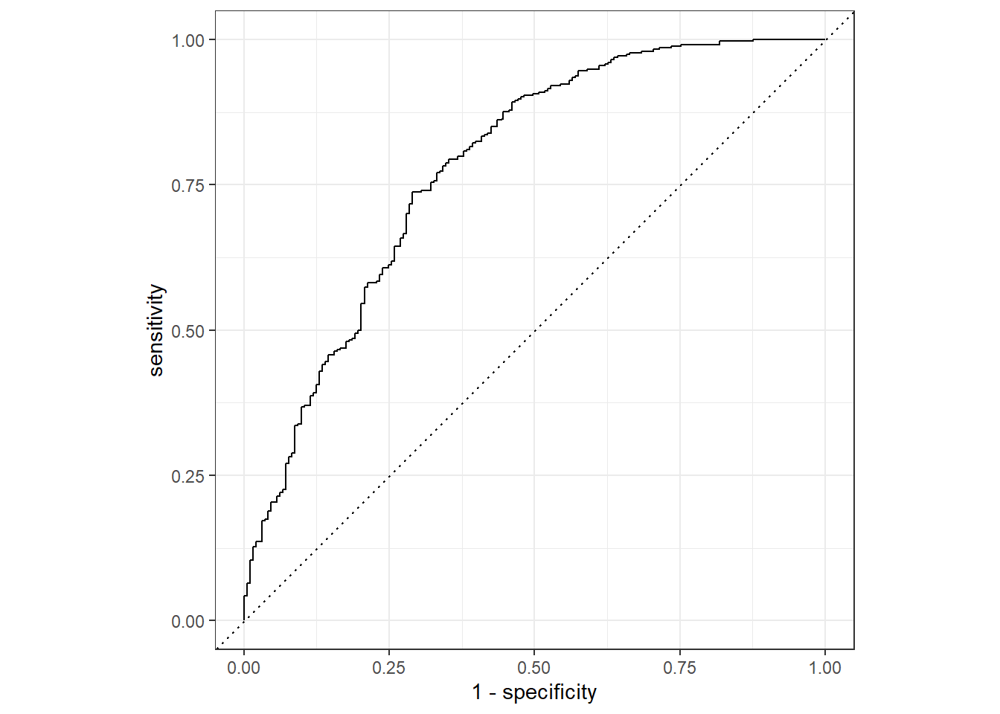
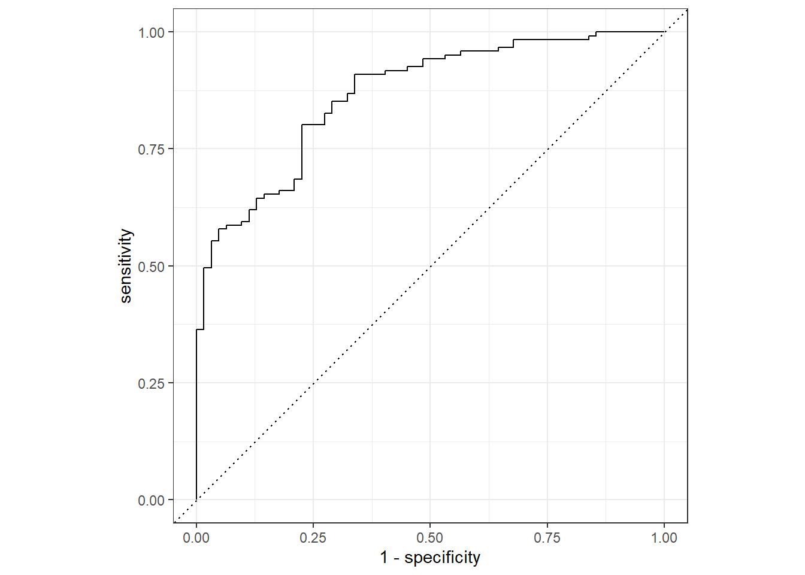
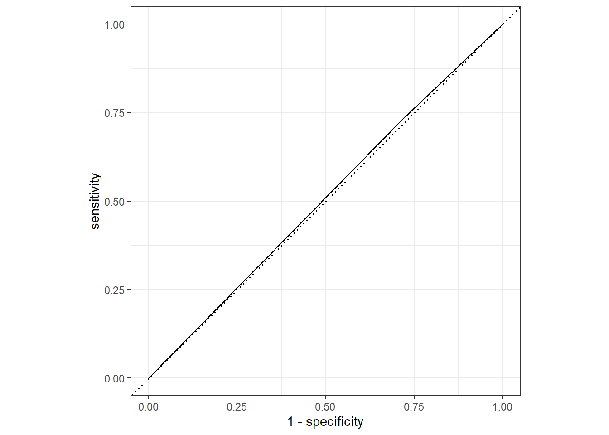
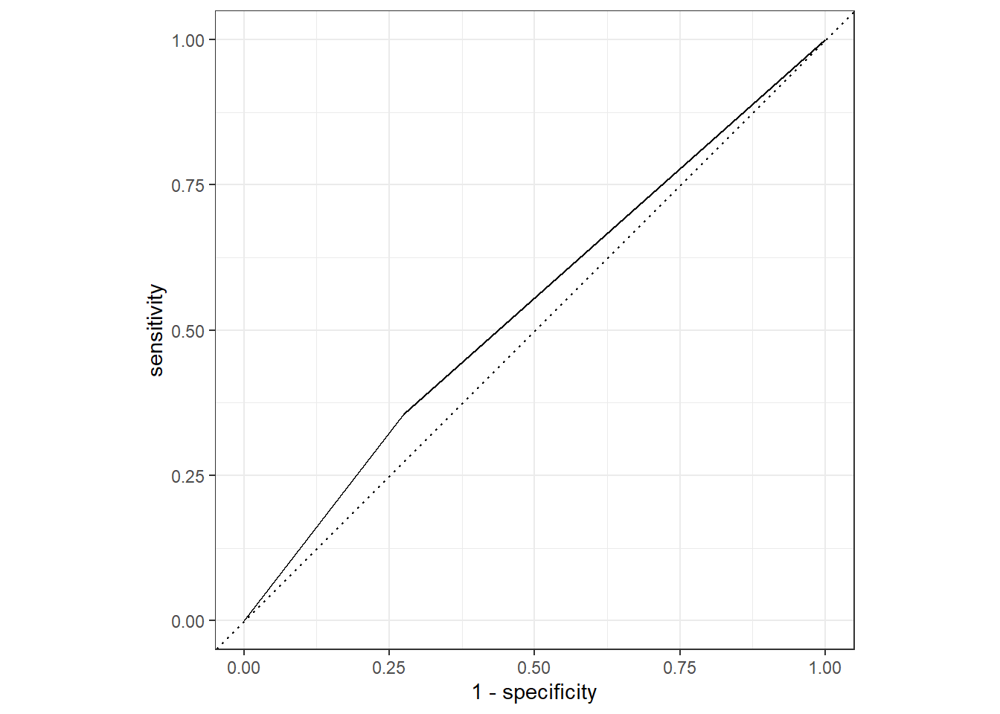

library(rsample)
library(yardstick)
library(tidymodels)
library(tidyverse)Flu Data Analysis
modeleval.qmd
Model Improvement
First, lets load the necessary packages for this process
Next, we will load the processed flu data from the processed_data folder.
flu_clean <- readRDS(here::here("fluanalysis","data","processed_data","flu_data_processed"))Data Splitting
We’ll then need to find a way to create a testing data set from flu_clean. We will use this data to test the generated model. The rest of the data will become the training data set.
To do this, we will use set.seed() so the analysis is reproducible when random numbers are used. initial_split() will be used to split the data.
set.seed(223)
data_split <- initial_split(flu_clean,prop=3/4)
training_data <- training(data_split)
test_data <- testing(data_split)Workflow Creation and Model Fitting
We will use tidymodels to generate our logistic regression model. We will use recipe() and worklfow() to create the workflow.
# Initiate a new recipe
logit_recipe <- recipe(Nausea ~ ., data = training_data)
# Create the logistic regression model
logistic <- logistic_reg() %>%
set_engine("glm")
# Create the workflow
flu_wflow <-
workflow() %>%
add_model(logistic) %>%
add_recipe(logit_recipe)
flu_wflow══ Workflow ════════════════════════════════════════════════════════════════════
Preprocessor: Recipe
Model: logistic_reg()
── Preprocessor ────────────────────────────────────────────────────────────────
0 Recipe Steps
── Model ───────────────────────────────────────────────────────────────────────
Logistic Regression Model Specification (classification)
Computational engine: glm Model 1 Evaluation
Now that we have created the workflow, we can fit the model to the training and test data sets created previously.
training_fit <- flu_wflow %>%
fit(data = training_data)
test_fit <- flu_wflow %>%
fit(data = test_data)The next step is to use the trained workflows, training_fit, to predict with unseen test data.
predict(training_fit, test_data)Warning in predict.lm(object, newdata, se.fit, scale = 1, type = if (type == :
prediction from a rank-deficient fit may be misleading# A tibble: 183 × 1
.pred_class
<fct>
1 No
2 Yes
3 No
4 No
5 No
6 Yes
7 No
8 No
9 No
10 Yes
# … with 173 more rows
# ℹ Use `print(n = ...)` to see more rowsWe now want to compare the estimates. To do this, we use augment().
training_aug <- augment(training_fit, training_data)Warning in predict.lm(object, newdata, se.fit, scale = 1, type = if (type == :
prediction from a rank-deficient fit may be misleading
Warning in predict.lm(object, newdata, se.fit, scale = 1, type = if (type == :
prediction from a rank-deficient fit may be misleadingtest_aug <- augment(test_fit, test_data)Warning in predict.lm(object, newdata, se.fit, scale = 1, type = if (type == :
prediction from a rank-deficient fit may be misleading
Warning in predict.lm(object, newdata, se.fit, scale = 1, type = if (type == :
prediction from a rank-deficient fit may be misleadingIf we want to assess how well the model makes predictions, we can us an ROC curve. roc_curev() and autoplot() commands create an ROC curve which we can use to evaluate the model on the training_data and the test_data. A ROC-AUC value of 0.5 is bad, whereas a value of 1.0 is perfect. Ideally, a value greater than 0.7 is desired.
training_aug %>%
roc_curve(truth = Nausea, .pred_No) %>%
autoplot()Warning: Returning more (or less) than 1 row per `summarise()` group was deprecated in
dplyr 1.1.0.
ℹ Please use `reframe()` instead.
ℹ When switching from `summarise()` to `reframe()`, remember that `reframe()`
always returns an ungrouped data frame and adjust accordingly.
ℹ The deprecated feature was likely used in the yardstick package.
Please report the issue at <https://github.com/tidymodels/yardstick/issues>.
training_aug %>%
roc_auc(truth = Nausea, .pred_No)# A tibble: 1 × 3
.metric .estimator .estimate
<chr> <chr> <dbl>
1 roc_auc binary 0.780Now, same for test_data.
test_aug %>%
roc_curve(truth = Nausea, .pred_No) %>%
autoplot()
test_aug %>%
roc_auc(truth = Nausea, .pred_No)# A tibble: 1 × 3
.metric .estimator .estimate
<chr> <chr> <dbl>
1 roc_auc binary 0.866The model appears to predict the data well since both the training and test data have an ROC-AUC >0.7.
Alternative Model
Now, lets repeat these steps with only 1 predictor.
logit_recipe1 <- recipe(Nausea ~ RunnyNose, data = training_data)
flu_wflow1 <-
workflow() %>%
add_model(logistic) %>%
add_recipe(logit_recipe1)
training_fit1 <- flu_wflow1 %>%
fit(data = training_data)
test_fit1 <- flu_wflow1 %>%
fit(data = test_data)
training_aug1 <- augment(training_fit1, training_data)
test_aug1 <- augment(test_fit1, test_data)Lets create the ROC for the training set.
training_aug1 %>%
roc_curve(truth = Nausea, .pred_No) %>%
autoplot()
training_aug1 %>%
roc_auc(truth = Nausea, .pred_No)# A tibble: 1 × 3
.metric .estimator .estimate
<chr> <chr> <dbl>
1 roc_auc binary 0.507Lets create the ROC for the test set.
test_aug1 %>%
roc_curve(truth = Nausea, .pred_No) %>%
autoplot()
test_aug1 %>%
roc_auc(truth = Nausea, .pred_No)# A tibble: 1 × 3
.metric .estimator .estimate
<chr> <chr> <dbl>
1 roc_auc binary 0.541Both ROC-AUC values were close to 0.5, which means this model is not a good fit.
Part II. Linear Regression.This section added by Betelihem G.
Data Splitting
We’ll then need to find a way to create a testing data set from flu_clean. We will use this data to test the generated model. The rest of the data will become the training data set.
To do this, we will use set.seed() so the analysis is reproducible when random numbers are used. initial_split() will be used to split the data.
set.seed(253)
data_split1 <- initial_split(flu_clean,prop=3/4)
training_data1 <- training(data_split1)
test_data1 <- testing(data_split1)Workflow Creation and Model Fitting
We will use tidymodels to generate our logistic regression model. We will use recipe() and worklfow() to create the workflow.
# Initiate a new recipe with the continous outcome
linear_recipe <- recipe(BodyTemp ~ ., data = training_data1)
# Create the linear regression model
linear <- linear_reg() %>%
set_engine("lm")
# Create the workflow
flu_wflow3 <-
workflow() %>%
add_model(linear) %>%
add_recipe(linear_recipe)
flu_wflow3══ Workflow ════════════════════════════════════════════════════════════════════
Preprocessor: Recipe
Model: linear_reg()
── Preprocessor ────────────────────────────────────────────────────────────────
0 Recipe Steps
── Model ───────────────────────────────────────────────────────────────────────
Linear Regression Model Specification (regression)
Computational engine: lm Model 1 Evaluation
Now that we have created the workflow, we can fit the model to the training and test data sets created previously.
training_fit1 <- flu_wflow3 %>%
fit(data = training_data1)
test_fit1 <- flu_wflow3 %>%
fit(data = test_data1)The next step is to use the trained workflows, training_fit, to predict with unseen test data.
predict(training_fit1, test_data1)Warning in predict.lm(object = object$fit, newdata = new_data, type =
"response"): prediction from a rank-deficient fit may be misleading# A tibble: 183 × 1
.pred
<dbl>
1 100.
2 99.8
3 98.9
4 98.7
5 99.6
6 99.7
7 98.9
8 99.6
9 99.7
10 99.5
# … with 173 more rows
# ℹ Use `print(n = ...)` to see more rowsWe now want to compare the estimates. To do this, we use augment().
training_aug3 <- augment(training_fit1, training_data1)Warning in predict.lm(object = object$fit, newdata = new_data, type =
"response"): prediction from a rank-deficient fit may be misleadingtest_aug3 <- augment(test_fit1, test_data1)Warning in predict.lm(object = object$fit, newdata = new_data, type =
"response"): prediction from a rank-deficient fit may be misleadingtest_aug3 %>%
select(BodyTemp,.pred)# A tibble: 183 × 2
BodyTemp .pred
<dbl> <dbl>
1 102. 99.3
2 97.9 99.6
3 99 98.6
4 98.1 98.7
5 99.5 98.8
6 98.8 98.5
7 102. 99.2
8 100. 99.2
9 98.1 99.6
10 98 99.0
# … with 173 more rows
# ℹ Use `print(n = ...)` to see more rowsIf we want to assess how well the model makes predictions, we can use Root Mean Square Error (RMSE)to evaluate the model on the training_data1 and the test_data1. The lower the RMSE number the better the model fit is. #for training data
training_aug3 %>%
rmse(BodyTemp, .pred)# A tibble: 1 × 3
.metric .estimator .estimate
<chr> <chr> <dbl>
1 rmse standard 1.15#Now, same for test_data.
test_aug3 %>%
rmse(BodyTemp, .pred)# A tibble: 1 × 3
.metric .estimator .estimate
<chr> <chr> <dbl>
1 rmse standard 0.896The training model RMSE is 1.15 and the test data RMSE is 0.89. These numbers tell us the difference between the predicted value and the value in the dataset. It seems both training and test models performed well.
Alternative Model with only 1 predictor
Now, lets repeat these steps with only 1 predictor.The steps are similar to the above procedure. The model type linear remains the same while the recipe changes to include only 1 predictor “RunnyNose”.
linear2 <- recipe(BodyTemp ~ RunnyNose, data = training_data1)
flu_wflow4 <-
workflow() %>%
add_model(linear) %>%
add_recipe(linear2)
training_fit2 <- flu_wflow4 %>%
fit(data = training_data1)
test_fit2 <- flu_wflow4 %>%
fit(data = test_data1)
training_aug4 <- augment(training_fit2, training_data1)
test_aug4 <- augment(test_fit2, test_data1)Lets look at the RMSE for training model.
training_aug4 %>%
select(BodyTemp, RunnyNose,.pred)# A tibble: 547 × 3
BodyTemp RunnyNose .pred
<dbl> <fct> <dbl>
1 99.2 Yes 98.9
2 101. Yes 98.9
3 101 Yes 98.9
4 98.7 Yes 98.9
5 102. No 99.2
6 97.8 Yes 98.9
7 98.5 Yes 98.9
8 102. Yes 98.9
9 98.4 Yes 98.9
10 99.3 No 99.2
# … with 537 more rows
# ℹ Use `print(n = ...)` to see more rowstraining_aug4 %>%
rmse(BodyTemp,.pred)# A tibble: 1 × 3
.metric .estimator .estimate
<chr> <chr> <dbl>
1 rmse standard 1.24Calculate RMSE for testing model
test_aug4 %>%
select(BodyTemp, RunnyNose,.pred)# A tibble: 183 × 3
BodyTemp RunnyNose .pred
<dbl> <fct> <dbl>
1 102. Yes 98.7
2 97.9 No 99.0
3 99 Yes 98.7
4 98.1 Yes 98.7
5 99.5 No 99.0
6 98.8 No 99.0
7 102. No 99.0
8 100. Yes 98.7
9 98.1 No 99.0
10 98 Yes 98.7
# … with 173 more rows
# ℹ Use `print(n = ...)` to see more rowstest_aug4 %>%
rmse(BodyTemp,.pred)# A tibble: 1 × 3
.metric .estimator .estimate
<chr> <chr> <dbl>
1 rmse standard 0.986Conclusion
Model 1 with ALL predictors
RMSE for training:1.15
RMSE for testing:0.89
Alternative model with only 1 predictor
RMSE for training:1.24
RMSE for testing:0.98
Overall, based on the RMSE values, it looks like model 1 with all predictors included is a better fit than the alternative model.